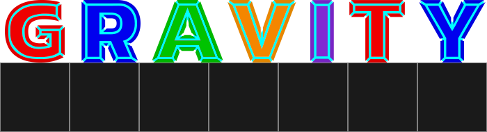

Experimental

What goes up, doesn't have to come down...

What goes up, doesn't have to come down...
Experimental technology has been developed that enables gravity to be controlled. Your job is to test it.
Manipulate gravity with touches and swipes as you complete a series of trials exploring the capabilities of these new technologies.
Every trial contains twenty challenging tests, each one a colourful puzzle with the goal of hitting a number of targets with 'Orbs'.
Each new trial brings new gameplay, including four different types of gravity field.
What goes up, doesn't have to come down...